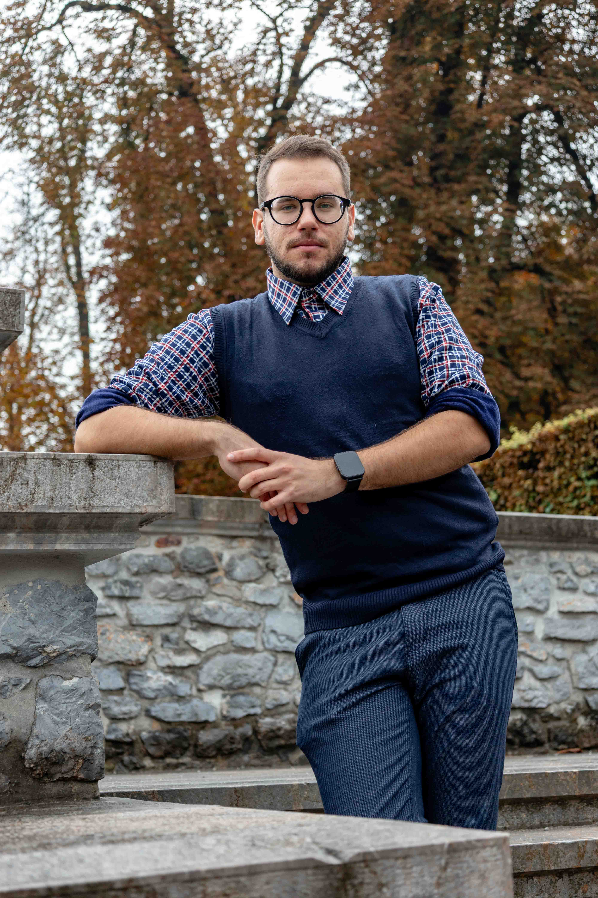

Tehnik računalništva
Zaključil sem srednješolsko izobraževanje na področju računalništva, kjer sem pridobil tehnično znanje in se spoznal z različnimi možnostmi uporabe tehnologije.
Tehnik računalništva · Študent medijev in novinarstva
Moja pot se je začela v svetu računalništva, danes pa svoje tehnično znanje povezujem z zanimanjem za medije, fotografijo, video in grafično oblikovanje. Rad raziskujem nove ideje in iščem načine, kako jih spremeniti v konkretne projekte.
Stopi v stik
Zaključil sem srednješolsko izobraževanje na področju računalništva, kjer sem pridobil tehnično znanje in se spoznal z različnimi možnostmi uporabe tehnologije.
Z delom sem pridobil izkušnje iz delovnega okolja, odgovornosti in sodelovanja pri vsakodnevnih nalogah.
Trenutno študiram medije in novinarstvo. Zanima me povezovanje informacij, pripovedovanja zgodb in vizualne komunikacije.
Svoje znanje razvijam tudi skozi osebne projekte na področju oblikovanja, fotografije, videa in digitalnih vsebin.
Za sodelovanje, vprašanja ali zanimive projekte mi lahko pišeš na kontakt@nikolamarinkovic.si .